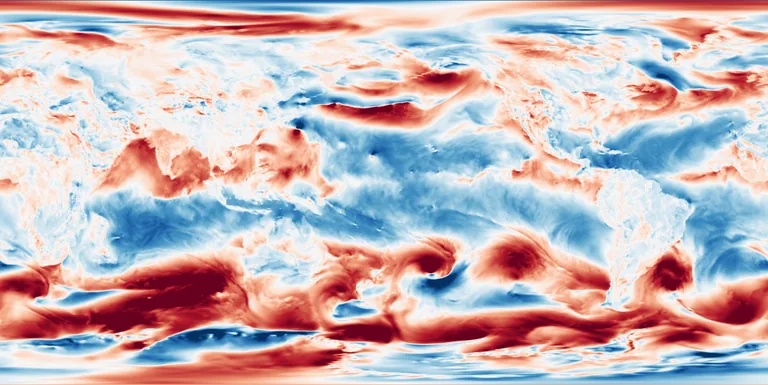

Benchmark / Near-lossless / era5-u10-1h / era5-u10-1h-06
era5-u10-1h-06
2023-08-13 · sample details

Metadata
| id | era5-u10-1h-06 |
|---|---|
| source | ERA5 hourly data on single levels, Copernicus Climate Data Store, GRIB |
| asset | reanalysis-era5-single-levels?variable=10m_u_component_of_wind&date=2023-08-13&time=00:00/23:00&format=grib |
| crs | EPSG:4326 |
| transform | -0.125 0.25 0.0 90.125 0.0 -0.25 |
| datetime_start | 2023-08-13T00:00:00Z |
| datetime_end | 2023-08-13T23:00:00Z |
| bands | 10u@00:00 to 10u@23:00, 24 planes |
| shape | 24x721x1440 |
| dtype | uint16 |
| unit | m s-1 |
| scale |
|
| offset |
|
| input_sha256 | 1a29e42c9f0b40723457bcd1aafbc03fb4ba794f9db127a3e873cb50ea738b78 |
| variable | 10m_u_component_of_wind |
| grib_short_name | 10u |
| bits_per_value | 16 |